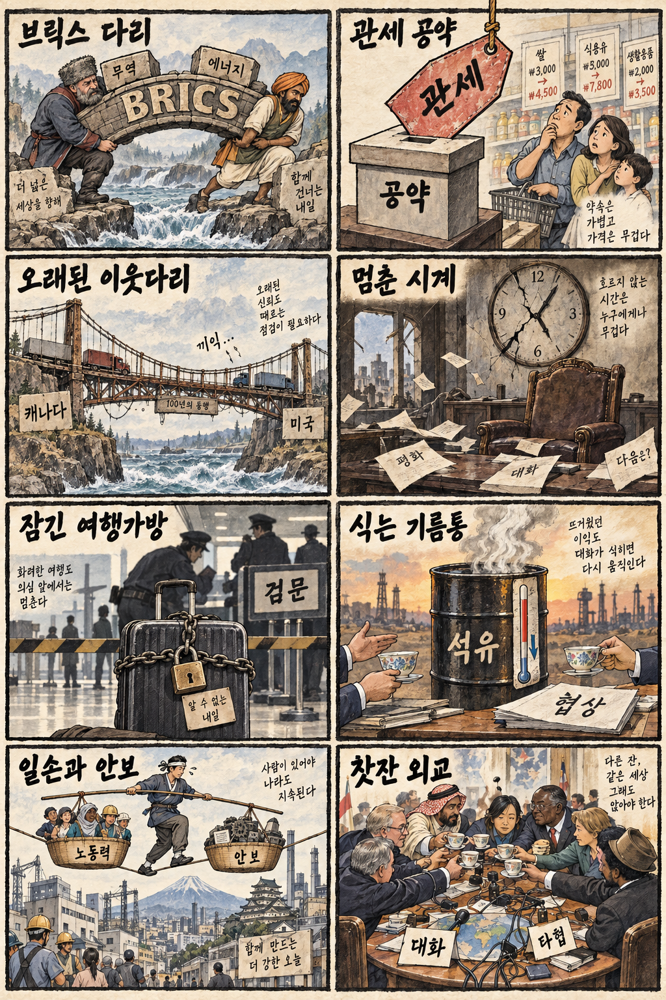
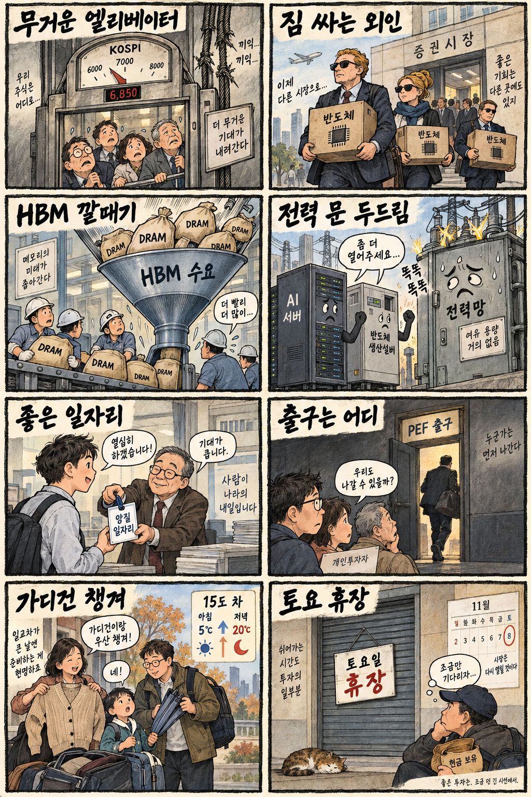

01
슈퍼마이크로컴퓨터 · 37.82→40.10달러 · +6.03%
내용요약 시가 대비 6.03% 상승해 조사 대상 가운데 가장 강한 반등을 보였습니다.
예상여파 AI 서버 수요 기대를 보여주지만 변동성이 큰 종목인 만큼 국내 서버 부품주로 단순 전이해 추격할 근거는 아닙니다.
MORNING_BRIEFING_20260912
작성 시각: 2026-09-12 06:39 KST · 직전 미국 정규장과 2026-09-12 KST 당일 공개 기사 기준
직전 미국 정규장인 9월 11일 뉴욕증시는 전반적인 위험선호 회복으로 다우 +0.98%, S&P 500 +0.86%, 나스닥 +0.96%로 반등했습니다. 다만 엔비디아와 일부 반도체·AI 인프라주는 시가 대비 약세였고 오라클은 큰 폭으로 밀려 지수와 종목의 차별화가 컸습니다. 한국 증시는 토요일 휴장으로 즉시 반영되지 않으며, 월요일에는 미국 반등보다 외국인의 국내 반도체 대규모 순매도 지속 여부와 KOSPI 7,000선 회복을 함께 봐야 합니다.
| 지수 | 종가 | 등락률 | 한국 증시 시사점 |
|---|---|---|---|
| 다우존스 | 52,573.29 | +0.98% | 월요일 위험선호 완충, 종목 차별화 유의 |
| S&P 500 | 7,656.98 | +0.86% | 월요일 위험선호 완충, 종목 차별화 유의 |
| 나스닥 종합 | 26,333.04 | +0.96% | 월요일 위험선호 완충, 종목 차별화 유의 |
다우·S&P 500·나스닥이 모두 0.8% 이상 올랐습니다.
월요일 7,000선 회복과 외국인 반도체 수급이 핵심입니다.
호르무즈 협상 기대가 비용 압력을 일부 낮췄습니다.
휴장일이라 당일 시가 진입 기준을 설정하지 않습니다.
9월 11일 보고서는 미국 PPI·국제유가·국채금리 상승과 필수 수급·컨센서스·보정 표본 부족으로 공식 추천을 내지 않았습니다. 게시 당시 판단은 유지하며 사후 종목을 추가하지 않습니다.
| 시장 | 종가 | 등락률 | 기준 |
|---|---|---|---|
| KOSPI | 6,909.91 | -1.76% | 9월 11일 · 시가 대비 +1.58% |
| KOSDAQ | 820.64 | -1.95% | 9월 11일 · 시가 대비 +0.46% |
| 다우존스 | 52,573.29 | +0.98% | 미국 9월 11일 정규장 |
| S&P 500 | 7,656.98 | +0.86% | 미국 9월 11일 정규장 |
| 나스닥 종합 | 26,333.04 | +0.96% | 미국 9월 11일 정규장 |
3대 지수가 0.8~1.0% 반등하며 위험선호가 회복됐습니다.
슈퍼마이크로컴퓨터가 시가 대비 6%대 상승했습니다.
전일 삼성전자 -3.53%, SK하이닉스 -2.21%로 마감했습니다.
오라클·엔비디아·마이크론은 지수 반등과 달리 밀렸습니다.
내용요약 시가 대비 6.03% 상승해 조사 대상 가운데 가장 강한 반등을 보였습니다.
예상여파 AI 서버 수요 기대를 보여주지만 변동성이 큰 종목인 만큼 국내 서버 부품주로 단순 전이해 추격할 근거는 아닙니다.
내용요약 시가 대비 1.42% 상승하며 대형 기술주 반등에 기여했습니다.
예상여파 국내 부품주는 실제 공급 비중과 주문 변화를 별도로 확인해야 합니다.
내용요약 시가 대비 8.61% 하락해 지수 반등과 정반대의 흐름을 보였습니다.
예상여파 AI 데이터센터 투자 기대가 있어도 재무 부담과 밸류에이션 재평가가 단기 변동성을 키울 수 있습니다.
내용요약 시가 대비 1.81% 하락해 메모리 업종의 상대 약세가 이어졌습니다.
예상여파 월요일 국내 메모리주는 미국 지수 반등보다 외국인 수급과 가격 지지가 중요합니다.
내용요약 시가 대비 1.34% 하락하며 나스닥 상승을 따라가지 못했습니다.
예상여파 국내 AI 반도체 공급망에는 투자심리 부담이지만 개별 수주·실적과 분리해 판단해야 합니다.
오늘은 토요일로 한국 증시가 휴장합니다. 직전 거래일 KOSPI는 6,909.91로 7,000선을 내줬고 전일 종가 대비 -1.76%였지만, 저가 매수로 시가 대비로는 +1.58% 회복했습니다. 미국 3대 지수 반등과 유가 하락은 월요일 개장에 완충 요인이지만 엔비디아·마이크론 약세와 외국인의 국내 반도체 대규모 순매도는 부담입니다. 월요일에는 KOSPI 7,000선 회복, 원·달러 환율, 외국인 선물·현물 동반 수급을 확인한 뒤 대응하는 편이 합리적입니다.
오늘은 추천 없음 — 현금 관망
토요일 휴장으로 당일 시가 진입 기준과 1일 예상 손익비를 설정할 수 없습니다. 전일까지의 수급·컨센서스·30건 이상 유사 조건 확률 보정도 문턱을 충족하지 않아 점수와 상승확률을 임의로 만들지 않습니다.
관심 연결종목 AI 전력망, 반도체 소재, 서버 부품은 월요일 관찰 대상일 뿐 매수 추천이 아닙니다. 미국 반등을 이유로 장전 예상 갭을 추격하지 않습니다.
오늘은 신규 진입보다 월요일 시나리오와 손실 한도를 정리합니다.
월요일 회복 여부와 외국인 선물·현물 동반 수급을 봅니다.
지수 반등에도 엔비디아·마이크론이 약했던 점을 점검합니다.
2%대 하락이 이어지는지, 공급 위험이 재부각되는지 확인합니다.
핵심 요약: AI 산업의 병목이 자금조달·모델 용량·전력망·보안 통제로 동시에 확장되고 있습니다. 반도체는 HBM 집중이 범용 메모리 공급과 경쟁 구도까지 바꾸고 있습니다.
내용요약 AI·반도체가 늘리는 전력 수요를 제12차 전력수급기본계획에 선제 반영해야 한다는 당일 산업계 제언입니다.
예상여파 송전망·발전원 확충이 늦어지면 데이터센터와 첨단 제조 투자의 입지·가동 일정이 제약받을 수 있습니다.
내용요약 적자가 지속되는 OpenAI와 앤트로픽이 대규모 자금조달을 위해 신용평가와 채권시장 신뢰 확보에 나서는 배경을 짚은 당일 보도입니다.
예상여파 AI 경쟁이 모델 성능뿐 아니라 현금흐름·차입비용 경쟁으로 이동하며 투자자의 재무 건전성 점검이 강화될 수 있습니다.
내용요약 수요가 공급을 앞지르면서 구글이 외부 기업에 제공하는 Gemini 용량을 제한적으로 배분한다는 당일 보도입니다.
예상여파 고성능 모델의 병목이 연산자원과 서비스 용량으로 드러나 멀티모델 전략과 자체 추론 인프라 수요가 커질 수 있습니다.
내용요약 HBM 집중이 범용 D램 공급과 중국 업체의 추격 구도에 미치는 영향을 분석한 당일 반도체 보도입니다.
예상여파 고부가 메모리 투자 확대가 범용 제품 가격과 설비 배분까지 흔들어 메모리 업황의 변동성을 높일 수 있습니다.
내용요약 승인받지 않은 생성형 AI 사용으로 고객정보와 소스코드가 외부로 유출될 때 사고 비용이 커진다는 당일 보안 보도입니다.
예상여파 기업은 사용 금지보다 승인 도구·데이터 분류·접근 통제·감사 로그를 결합한 운영 정책이 필요합니다.
핵심 요약: 미국의 관세·선거 공약과 북미 동맹 긴장이 정책 불확실성을 높이는 가운데 러시아·인도는 브릭스 협력을 확대하고 있습니다. 호르무즈 협상 기대는 유가를 낮췄지만 중동 보안 위험은 여전히 큽니다.
내용요약 러시아와 인도가 양자 협력과 브릭스의 경제·외교적 활용 범위를 넓히려는 움직임을 다룬 당일 국제 보도입니다.
예상여파 서방 중심 제재·결제망과 병행하는 교역 구조가 강화되면 에너지와 원자재 결제 흐름이 더 다극화될 수 있습니다.
내용요약 미국 관세 철회와 현금성 선거 공약을 둘러싼 월스트리트저널의 비판을 전한 당일 보도입니다.
예상여파 관세·재정 공약의 변동성이 커질수록 미국 물가와 국채금리, 교역국의 수출 전망에 정책 위험 프리미엄이 붙을 수 있습니다.
내용요약 관세와 주권 문제까지 겹치며 미국과 캐나다의 장기 동맹 관계가 흔들린다는 당일 분석입니다.
예상여파 북미 공급망의 통관·투자 불확실성이 자동차·에너지·원자재 기업의 비용과 입지 결정에 영향을 줄 수 있습니다.
내용요약 하마스가 가자전쟁 2주년에 맞춰 유럽에서 공격을 모의했고 탄약이 확보됐다는 수사 내용을 전한 당일 보도입니다.
예상여파 유럽 주요 도시의 대테러 경계와 국경·행사장 보안이 강화되며 여행·물류의 점검 비용이 늘 수 있습니다.
내용요약 중동과 이란의 호르무즈 관련 협상 기대가 커지며 국제유가가 2%대 하락했다는 당일 보도입니다.
예상여파 협상 진전은 에너지 비용 압력을 낮추지만 공급 경로의 지정학적 위험이 해소된 것은 아니어서 변동성은 이어질 수 있습니다.

핵심 요약: 국내 증시는 7,000선 아래에서 주말을 맞았고 외국인의 대형 반도체 매도가 부담으로 남았습니다. 전력망 확충과 양질의 일자리, 사모펀드 투자자 보호, 큰 일교차가 산업·생활의 주요 점검 과제입니다.
내용요약 외국인이 이틀 동안 삼성전자와 SK하이닉스를 대규모 순매도한 가운데 미국 기술주 반등이 주말 사이 변수로 제시된 당일 보도입니다.
예상여파 월요일 국내 반도체주는 미국 반등의 전이보다 외국인 현물·선물 수급과 전일 저점 회복 여부가 더 중요합니다.
내용요약 사모펀드의 기업 인수·매각 과정이 일반 주주에게 남길 수 있는 위험을 짚은 당일 시장 보도입니다.
예상여파 공개매수 조건, 상장 유지 여부, 지배구조 변화가 불명확한 종목은 이벤트 기대만으로 추격하지 않는 접근이 필요합니다.
내용요약 롯데바이오로직스가 청년 채용과 복지 성과로 대한민국 일자리 으뜸기업에 선정됐다는 당일 보도입니다.
예상여파 바이오 생산시설 투자가 채용과 지역 산업 생태계 확대로 이어지는지 중장기 고용 지표에서 확인할 필요가 있습니다.
내용요약 AI·반도체 전력 수요 증가를 국가 전력계획에 조기에 반영해야 한다는 당일 제언입니다.
예상여파 국내 첨단산업의 성장 속도가 송전망 인허가와 안정적 발전원 확보 능력에 좌우될 가능성이 커졌습니다.
내용요약 전국이 대체로 맑지만 아침 최저 12도 안팎과 한낮 30도 사이의 큰 일교차가 예상된다는 9월 12일 기상 보도입니다.
예상여파 주말 외출에는 얇은 겉옷이 필요하고 새벽 안개 구간에서는 교통안전에 유의해야 합니다.
